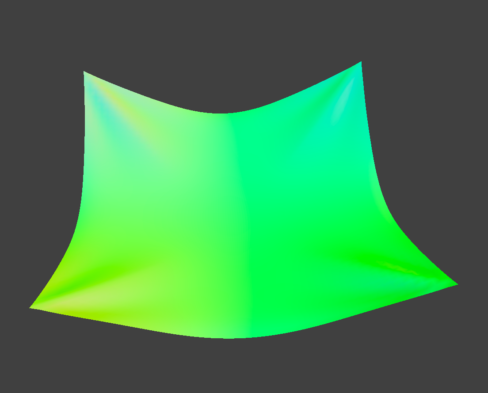

CS184/284A Spring 2025 Homework 4 Write-Up
Link to webpage: https://cal-cs184-student.github.io/hw-webpages-jordan-victor/
Link to GitHub repository: https://github.com/cal-cs184-student/sp25-hw4-alpaca_f

Overview
For this project, we implemented cloth simulation using mass and springs. Based on the system, we apply physical forces and numerical integration to simulate the way cloth moves over time and handle various forms of collision. Finally, we implemented various measures Shaders, including diffuse shading, Blinn Phong shading, displacement, bump mapping, and environment mapping reflection. We will use the physics equations we learned in class to implement these.Part 1: Masses and springs
For this part, we will implement a grid of masses and springs to simulate the cloth.

|

|

|

|

|
Part 2: Simulation via numerical integration
In part 2, we implemented the simulate function that applies forces on our cloth's point masses.Describe the effects of changing the spring constant ks; how does the cloth behave from start to rest with a very low ks? A high ks?
With a low ks, the upper part of the cloth starts to sink and fold more or maybe shrink. With a high ks, the upper part of the cloth is more straight and doesn't fold. This is because a higher ks has a stiffer string, requiring more force to move it. So the cloth with high ks is more stable and less likely yo fold.

|
|
What about for density?
With a high density cloth, it seems to sink more. But a low density cloth does not sink and only has littlte folding effect.

|

|
What about for damping?
When we modify the damping value, it has effects on the speed of the animation. A lower damping value has faster animations. But a higher damping value has slower animations. Damping results in a decay in motion and brings the system to an equilibrium. It is way more like the power of the cloth to resist the motion. So it will result in a faster or slower animation.

|

|
Final state of the cloth
|

|
Part 3: Handling collisions with other objects
In part 3, we implemented the collision method.
For sphere, we will need to first computed the intersection point of point mass with
the sphere by extending its trajectory.Then we will compute correction vector
which should be applied to last_position to reach this point. At last, we set
position = last_position while taking into account of friction, scaling by
(1-f).
For plane, we have a similar approach, but when we compute the correction
vector, we have to make sure that the point mass’s last_position should reach a
point which is slightly above the intersection point, on the same side of the
plane.
As the ks increases, the forces applied to the cloth do not affect it as much. But with lower ks, the foreces or the gravity will affect the cloth more. The cloth will be more easily affected by the forces. So they drop more. But higher ks makes the cloth more stable and less affected by the forces.

|

|

|
A screenshot of shaded cloth lying peacefully at rest on the plane

|
Part 4: Handling self-collisions
In part 4, we implement self-colision by implementing spatial hashing in the `Cloth::hash_position`, `Cloth::build_spatial_map`, and `Cloth::self_collide` methods.
In hash_position, we partition the 3D space into uniformly sized boxes with dimensions
w × h × t, where:
- w =
3 * width / num_width_points - h =
3 * height / num_height_points - t =
max(w, h)
Using the transformed coordinates, we compute a unique numerical hash that corresponds to each 3D box.
In build_spatial_map, we iterate over all point masses and use the
Cloth::hash_position method to assign each point to its corresponding
spatial hash entry, constructing an efficient lookup structure for collision detection.
self_collide
In self_collide, we:
- Query the spatial hash table to identify neighboring point masses that could potentially collide with the current point mass.
-
For each candidate pair within a distance of
2 * thickness, compute a correction vector to enforce minimum separation. -
Average all applicable correction vectors for the point mass and scale the result by
1 / simulation_stepsto ensure stable integration over multiple timesteps.
3 screenshots that document how your cloth falls and folds on itself, starting with an early, initial self-collision and ending with the cloth at a more restful state
|
|

|
|
|
Vary the density and ks
and describe with words and screenshots how they affect the behavior of the cloth as it falls on itself.
A cloth with lower density does not easily fold onto itself as a cloth with higher density does. As ks increases, the amount of folds decreases. This is because a higher ks means that the cloth is more stiff. For a cloth with a larger ks, it is more difficult for it to form folds.

|

|
|
|

|
Part 5: Shaders
In part 5, we implemented various shaders, including diffuse shading, Blinn-Phong shading, displacement and bump mapping, and environment-mapped reflections.Explain in your own words what is a shader program and how vertex and fragment shaders work together to create lighting and material effects.
Shaders programmatically alter key stages of the rasterization pipeline to achieve lighting and material effects: vertex shaders first transform geometry by processing vertex positions and normals during triangle setup, while fragment shaders subsequently compute per-pixel color, shading, and lighting effects during rasterization. By operating at different pipeline stages - with vertex shaders manipulating geometric properties and fragment shaders determining surface appearance - they collectively produce the final rendered image with realistic materials and illumination.
Explain the Blinn-Phong shading model in your own words. Show a screenshot of your Blinn-Phong shader outputting only the ambient component, a screen shot only outputting the diffuse component, a screen shot only outputting the specular component, and one using the entire Blinn-Phong model.
The Blinn-Phong shading model combines three key lighting components to create realistic material appearances: ambient, diffuse, and specular lighting. The ambient component provides a base uniform illumination, giving objects a flat matte appearance. The diffuse component simulates Lambertian reflection, where light scatters uniformly across a surface based on its angle to the light source. The specular component models the bright highlights that occur when light reflects directly off a surface, creating a shiny effect. By blending these components, Blinn-Phong shading effectively approximates how light interacts with different materials to produce convincing shading effects.
|
|
|

|
|
Custom image
|
|
Both bump mapping and displacement mapping simulate surface details by altering normals to create bump illusions. But they differ fundamentally: bump mapping solely perturbs normals for lighting tricks without changing geometry, making it fast but inaccurate at silhouettes. Displacement mapping physically moves vertices via height maps and derives correct normals from the deformed mesh, achieving realistic depth at higher computational cost. The former merely fakes surface detail through shading, whereas the latter actually modifies geometry for authentic bumps visible from all angles.

|

|

|
Bump mapping remains largely unaffected by mesh coarseness since it only manipulates surface normals without altering geometry. In contrast, displacement mapping's effectiveness heavily depends on mesh resolution: with high-resolution spheres, vertex displacement produces smooth, rounded surfaces with subtle bumps. If we have low-resolution meshes result in angular, it has faceted appearances with pronounced sharp edges due to insufficient geometric detail for proper deformation. This fundamental difference stems from displacement mapping's direct modification of vertex positions versus bump mapping's purely optical normal perturbation.
|
|

|

|
|
Show a screenshot of your mirror shader on the cloth and on the sphere.

|
|